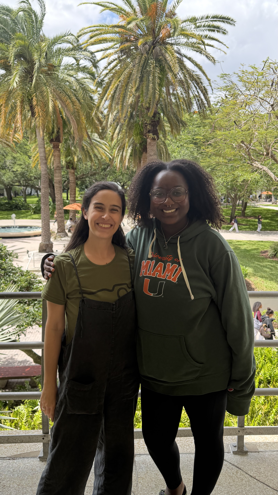

Récente diplômée de l’Université de Miami, elle est informaticienne et cofondatrice de l’équipe Ibis French. Elle a obtenu son diplôme en informatique et français (classe 2026) et souhaite désormais poursuivre ses études dans le domaine du design UX, à Atlanta, où elle est basée.
Yadiel Cruz : Développeur
Étudiant en informatique et français à l’Université de Miami.
Karla Fidalgo : Étudiante-consultante
Karla est diplômée en architecture et en français (classe 2026) et travaille comme architecte. Ses compétences s’étendent également au domaine de la pédagogie, forte de son expérience en tant qu’étudiante-consultante durant trois semestres. Elle a contribué à la conception et à la structuration de l’approche pédagogique de la plateforme, tout en apportant un soutien stratégique à l’équipe.
Dr. Viviana Pezzullo : Enseignante Coordinatrice
Dr. Viviana Pezzullo est l’enseignante coordinatrice du projet Ibis French. Elle dirige le programme de français de premier cycle à l’Université de Miami, où elle s’investit activement dans le développement pédagogique et l’innovation curriculaire.
Ses recherches portent sur la culture visuelle, les études culturelles, les humanités numériques et la pédagogie de l’enseignement des langues étrangères. À travers son engagement académique et institutionnel, elle accompagne les étudiants dans la mise en œuvre de projets qui allient réflexion critique, créativité et application concrète des compétences linguistiques.

Dr. Viviana Pezzullo et Fatima en avril 2026. Yes, girls can code.
Ibis French est une plateforme conçue par les étudiants, pour les étudiants. Elle a été entièrement imaginée et développée par Fatima Kane, avec l’aide de Yadiel Cruz, au printemps 2026 dans le cadre de leur stage en français sous la direction de Dr. Viviana Pezzullo. L’objectif de la plateforme est d’offrir un accompagnement et des outils de pratique en grammaire française aux étudiants inscrits aux cours de français intermédiaire à l’Université de Miami.
Si vous êtes intéressé.e par un stage combinant votre expertise et les études de langues, cliquez ici !
Les photos présentées sur la page d’accueil ont été prises par des étudiants qui ont participé au programme UParis à l’étranger (2023-2026).
Si vous souhaitez aussi vivre cette expérience, cliquez ici !